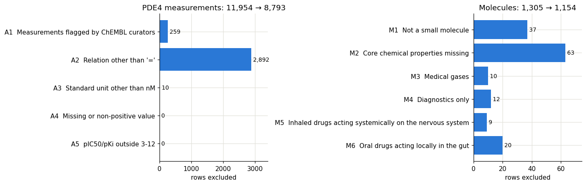
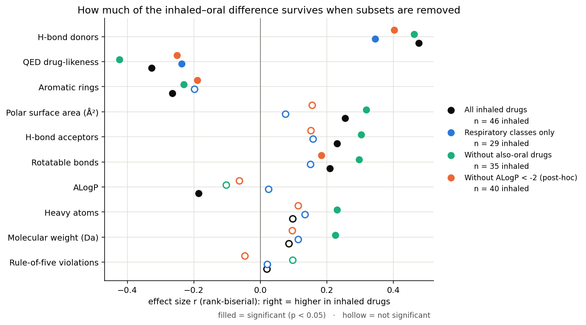
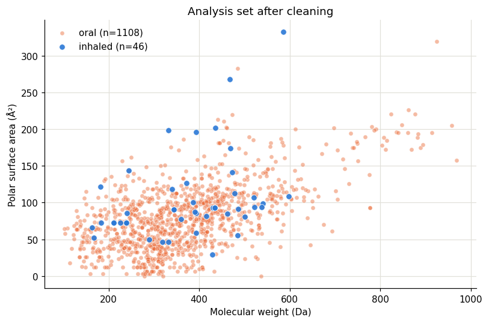
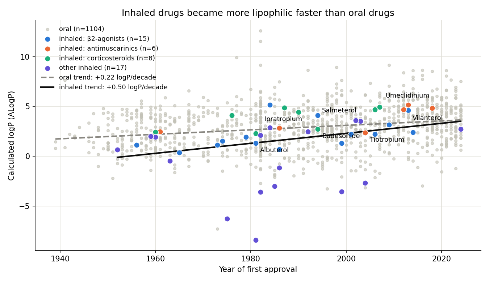
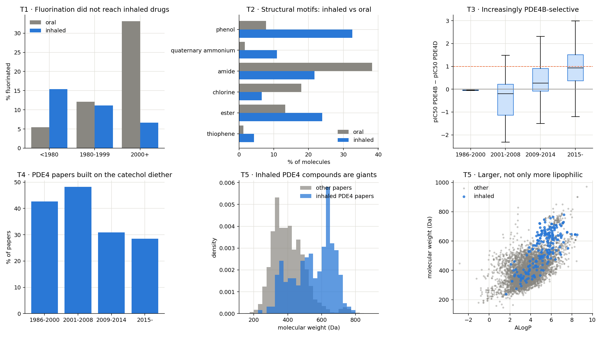

Is there a Rule of 5 for inhaled drugs?
Lipinski's rule of five tells chemists what an oral drug usually looks like. Inhaled drugs have the opposite job: they should stay in the lung, not reach the blood. This study uses public ChEMBL and FDA data, SQL and Python to describe what approved inhaled drugs look like, and how their chemistry has changed.
Problem statement
Drug discovery teams filter candidate molecules with property rules. The best known, Lipinski's rule of five, describes drugs that are absorbed from the gut: molecular weight up to 500 Da, logP up to 5, at most 5 hydrogen-bond donors and 10 acceptors.
An inhaled drug for asthma or COPD works under different constraints. It is delivered straight to the lung, should act there for many hours, and the part that reaches the blood or is swallowed should do as little as possible. A filter built for oral absorption may reject good inhaled candidates or let through poor ones. There is no widely agreed public equivalent for inhalation.
For a respiratory R&D team, a property profile of successful inhaled drugs is a practical screening tool: it helps decide which chemical series to pursue for inhalation, and it makes design choices explainable to project teams.
Questions
- Do approved inhaled drugs differ from oral drugs in their physicochemical properties, and does the rule of five capture the difference?
- Has the chemistry of inhaled drugs changed over time, and differently from oral drugs?
- Which structural features are typical of inhaled drugs?
- What do compounds designed for inhalation look like in a current target class, the PDE4 inhibitors used in COPD research?
Data
- ChEMBL 37 (EMBL-EBI): 4,225 approved drugs with calculated properties, names and ATC codes, plus 11,954 IC50/Ki measurements on human PDE4 for 7,352 compounds. Downloaded through the official API because the full dump (25 GB) did not fit on the machine.
- openFDA Drugs@FDA: 51,886 FDA products with dosage form and route of administration. ChEMBL has no "inhaled" flag, so the route comes from here.
- Every raw file is stored unchanged with its download time and SHA-256 hash, and the whole database rebuilds from two scripts.
FDA and ChEMBL share no identifier. Ingredient names were matched to ChEMBL names and synonyms (92.3% exact, 0.3% after removing salt words, 7.4% unmatched), and salts were mapped to their parent molecule so that properties are compared on the active molecule. The data dictionary documents every table and column.
How good is that join?
Everything in this study rests on a join with no shared key behind it, so "92.3% matched" is a coverage figure, not a correctness one: it says how many names found a partner, not how many found the right one. src/audit_name_matching.py estimates correctness instead, and the group that matters is small enough to check completely rather than sample.
- The inhaled side was audited in full, not sampled. 82 ingredient names appear on an FDA inhalation product; 76 matched and were read one by one against the molecule they were assigned, which is what produces the 46 drugs in the analysis set. None was wrong. The review is stored in
data/name_match_verdicts.csv, and the audit compares against it on every run, so a future ChEMBL release that silently re-points a match fails the check instead of passing unnoticed. - The 6 unmatched inhaled names cost nothing. They are AIR, MEDICAL AIR, CARBON DIOXIDE in three spellings (one of them, "CARBON DIOIDE", a typo in the FDA source) and NITROGEN. All six carry the dosage form
GASin the FDA data itself — not in my reading of the names — and cleaning rule M3 removes medical gases in any case. So no therapeutic inhaled drug is missing from the group because of name matching. - Ambiguity is the real failure mode, and it was measured. The index is built with
setdefault, so a name known to several molecules silently resolves to whichever was inserted first. 290 names in the index are ambiguous and 25 are actually used by an FDA name. For 23 of them both candidates are the salt and the free base of one drug, which collapse to the same parent, so the choice cannot change a result. The two that differ — a ChEMBL synonym "bicalutamide" attached to talazoparib, and an indium-111 labelled version of capromab pendetide — both resolve correctly, because preferred names are indexed before synonyms. That ordering is load-bearing, not cosmetic. - One wrong match was found, outside the analysis. Only 2 of 2,695 matches were made through a trade-name synonym rather than a preferred name or a regulatory one, and reading both showed one error: the FDA ingredient "iron dextran" was matched to ferric oxyhydroxide, a different substance. It is an injectable product, so it never reaches the oral or inhaled groups — but it is the kind of error this check exists to surface, and it is reported rather than quietly fixed.
- The 7.4% unmatched became a set of reasons: 143 single names ChEMBL does not hold, 42 combination products written into one ingredient field, 26 salt forms whose parent is also unknown, and 4 biologics or descriptive names. Stripping pharmacopoeia suffixes such as "NITROGEN, NF" was tested as a fix and would recover exactly 1 name, so it was not worth adding.
The inhaled group of 46 can be relied on: it was checked molecule by molecule, and the only names it misses are gases that the cleaning rules exclude anyway. The oral group of 1,108 was not audited in full — a random sample of 50 exact matches is in reports/name_match_audit.csv — so the right statement is that one wrong match is known across the whole mapping, not that none exists.
Methods
From raw data to the analysis set
- StartParent molecules with at least one oral or inhaled FDA product1,305
- TransformSplit combined routes ("INHALATION, ORAL") and normalise case; inherit ATC codes from salts; make groups exclusive (inhaled takes precedence; 15 molecules flagged as also oral here, 11 of them still in the analysis set after the later rules)The route fix alone adds an inhaled molecule that exact text matching missed.1,305
- M1-M2Remove non-small molecules and molecules without core properties−37 · −63
- M3-M4Remove medical gases (< 100 Da or ATC V03AN) and diagnostic-only agents−10 · −12
- M5Remove inhaled drugs acting on the nervous system (anaesthetics, loxapine, levodopa): they are inhaled to reach the bloodThe mirror rule M6 removes oral drugs acting only in the gut, designed not to be absorbed.−9
- M6Remove gut-local oral drugs (ATC A06/A07 only)−20
- ResultLung-targeted inhaled drugs and systemic oral drugs46 + 1,108

Statistics
- Group comparison: Mann-Whitney U tests (the properties are not normally distributed) with Holm correction for multiple testing, and the rank-biserial correlation r as effect size. With 46 inhaled drugs, effect sizes matter more than p-values.
- Sensitivity analysis: the comparison repeated on subsets of the inhaled group — without the 11 molecules that also have oral products, on the 29 drugs whose ATC code says they treat airway disease, and leaving out one respiratory class at a time. A difference that survives every subset belongs to the route; one that disappears when a few molecules leave belongs to those molecules.
- Multivariate view: principal component analysis on eight standardised descriptors.
- Time trends: Spearman correlation with year of first approval, bootstrap 95% confidence intervals, and a model with one intercept per respiratory class tested by shuffling years within class (permutation test).
- Structural motifs: RDKit substructure searches with Fisher exact tests, and a logistic model with a year × route interaction for fluorination.
- Ionisation state: RDKit formal charge and counts of ionisable groups, resolved into a class by five ordered rules, with the deciding rule stored per molecule. Used to re-run the group comparison and the time trends without the molecules for which a neutral-species logP has no meaning.
- Verification: the browser statistics are checked against numpy, pandas and SciPy (40 automated checks), and the cleaning stops if a reference inhaled drug (albuterol, budesonide, fluticasone, formoterol, ipratropium, salmeterol, tiotropium) disappears.
- The page itself is checked: every number written here is listed in
src/case_study_fact_check.pywith the value this page states, recomputed, and reported as pass or fail — 179 checks, 155 of them recomputed directly from the database and the rest read from the report tables that hold the resampling results. The script fails if a number has drifted, and warns if it is still checking a value that has been removed from the page. A page is only as true as the last time somebody checked it against the data, so that check is a command rather than a memory.
Key queries
The analysis set lives in a SQLite database. These are the queries behind the main numbers; each one opens in the SQL workbench, where the chart and the statistics panel update with the result.
Results
Q1 · The rule of five does not separate inhaled from oral drugs; polarity and donors do
26.1% of inhaled and 22.8% of oral drugs break at least one of Lipinski's rules, and the number of violations does not differ (p = 0.77). The differences lie in specific properties:
| Property | Median inhaled | Median oral | Effect size r | p (Holm) |
|---|
Rank-biserial r from −1 to 1: bar to the righthigher in inhaled drugs, to the leftlower. Grey rows are not significant after correction.
Two checks ask whether this really is about the route of administration. The first is easy to pass: without the 11 molecules that also exist orally (35 inhaled drugs left), the pattern holds or strengthens — H-bond donors r = +0.46, QED r = −0.42, PSA r = +0.32, aromatic rings r = −0.23. The lower logP does not survive even here (r = −0.10, p = 0.30).
The second check is harder. The inhaled group is four classes: 15 β2-agonists, 8 corticosteroids, 6 antimuscarinics and 17 "other inhaled" drugs. That last group holds drugs that are not designed to stay in the lung — inhaled antibiotics (amikacin, tobramycin), an antiviral (zanamivir), a diagnostic sugar (mannitol), a chelator (pentetic acid) — and six of them have an ALogP below −2. Repeating the comparison on the 29 drugs whose ATC code says they treat airway disease separates what belongs to the route from what belongs to those molecules:
| Property | All 46 inhaled | 29 respiratory only | Verdict |
|---|---|---|---|
| H-bond donors | +0.48 | +0.35 (p = 0.001) | holds |
| QED drug-likeness | −0.33 | −0.24 (p = 0.03) | holds, weaker |
| Aromatic rings | −0.26 | −0.20 (p = 0.06) | no longer significant |
| H-bond acceptors | +0.23 | +0.16 (p = 0.14) | no longer significant |
| Polar surface area | +0.25 | +0.08 (p = 0.49) | disappears |
| ALogP | −0.19 | +0.02 (p = 0.82) | disappears (already not significant) |

Only two of the five differences that survived the Holm correction are properties of the inhaled route itself: more H-bond donors and a lower QED. The polarity result is carried by a handful of very polar antibiotics, sugars and chelators rather than by respiratory drugs, so it is reported below as a property of what is given by inhalation today, not as a design rule. The same six molecules drive the ALogP difference, which was already not significant after correction.

A principal component analysis on eight descriptors (1,143 molecules, without the also-oral group) needs two components for 72.5% of the variance. PC1 (46.8%) is a size and polarity axis (molecular weight, PSA, H-bond acceptors and donors load positively, QED negatively); PC2 (25.7%) opposes lipophilicity and aromaticity to polarity. Inhaled drugs sit higher on PC1 (mean +1.26 vs −0.04, r = +0.44, p = 1.1 × 10⁻⁵) and lower on PC2 (−1.05 vs +0.03, r = −0.26, p = 0.009): larger and more polar, and less lipophilic for their size.
Q2 · Inhaled drugs became more lipophilic and flexible over time

- Year vs logP among inhaled drugs: Spearman ρ = +0.51 (95% CI 0.28 to 0.68); oral drugs ρ = +0.25.
- The trend holds inside two of the three respiratory classes: β2-agonists ρ = +0.66 (p = 0.007) and corticosteroids ρ = +0.67 (p = 0.07). The antimuscarinics cannot be used for this: 5 of those 6 molecules carry a permanent positive charge, so their ALogP describes a neutral species that does not exist. An earlier version of this page reported ρ = +0.77 for them; it is withdrawn, for the reason set out under Q3. Adjusted for class: +0.43 logP and +1.1 rotatable bonds per decade (permutation p = 0.002 for both), and +0.43 logP per decade (p = 0.009) when every permanently charged molecule is dropped.
- From albuterol (1981, logP 1.3) to vilanterol and umeclidinium (2013, logP 4.6 and 5.1): the move from inhalers taken several times a day to once-daily products coincides with more lipophilic, more flexible molecules.
- Molecular weight grows for both routes at a similar rate, so size alone is a general trend in drug discovery, not an inhaled one.
Q3 · Structural signatures: permanent charge, no fluorine
ChEMBL 37's API returns no ionisation descriptors — cx_logd, the pKa fields and molecular_species are empty for every molecule — so src/compute_charge.py derives the ionisation state with RDKit: formal charge, then counts of quaternary nitrogens, basic amines, amidines, guanidines and acidic groups, resolved into one class by five ordered rules. Every molecule stores the rule that decided it. These are structural rules, not pKa predictions: they say which ionisable groups a molecule carries, not what fraction of it is charged at a given pH.
| Class at physiological pH | Inhaled (46) | Oral (1,108) | |
|---|---|---|---|
| Permanent cation | 10.9% | 2.2% | odds ratio 5.5, Fisher p = 0.005 |
| Cation | 45.7% | 36.4% | |
| Anion | 15.2% | 12.2% | |
| Zwitterion | 4.3% | 6.0% | |
| Neutral | 23.9% | 43.2% | odds ratio 0.41, Fisher p = 0.009 |
- Inhaled drugs are much less often neutral: 23.9% against 43.2%, so 76.1% of them carry a charge at physiological pH against 56.8% of oral drugs. This is a sharper statement than the polar surface area result that the class analysis knocked down, because it names a mechanism instead of a correlation: a charged molecule crosses the alveolar membrane poorly, which is what an inhaled drug is supposed to do.
- Permanent positive charge: five times more common in inhaled drugs — ipratropium, tiotropium, aclidinium, umeclidinium, glycopyrronium. The substructure panel above reports this as 10.9% vs 1.7% with an odds ratio of 7.0, because its SMARTS matches only sp3 quaternary nitrogen. The charge calculation also catches aromatic quaternary nitrogen, which adds five permanently charged oral drugs the panel missed (pralidoxime, pyridostigmine, pyrvinium, isavuconazonium, serdexmethylphenidate) and brings the oral share to 2.2% and the odds ratio down to 5.5. The newer number is the better one.
- Fluorine: among drugs approved since 2000, 33% of oral drugs contain fluorine (136 of 411) but only 7% of inhaled drugs (1 of 15). The opposite time trends are significant (year × route interaction, p = 0.005). Fluorine is often added to slow metabolism; for an inhaled drug, fast clearance of the systemic fraction is an advantage.
ALogP is the calculated partition coefficient of the neutral molecule. For a permanent cation the neutral molecule does not exist at any pH, so for 5 of the 46 inhaled drugs and 24 of the 1,108 oral ones this study has been reading a descriptor with no physical meaning. Finding that out is the point of computing the charge.
It lands on one claim in particular. The antimuscarinics are 6 molecules and 5 of them are quaternary. The ρ = +0.77 once reported for that class rested almost entirely on those five; it was already not significant (p = 0.07 on six points), and removing them leaves one molecule, so the figure is not so much wrong as impossible to verify. It has been withdrawn from Q2 rather than restated with a caveat.
What survives the exclusion is most of the study. The class-adjusted trend barely moves: +0.43 logP per decade on 24 molecules with permutation p = 0.009, against +0.43 on 29 with p = 0.002. The β2-agonist and corticosteroid trends are untouched, since neither class contains a quaternary drug. Every group difference holds or strengthens — H-bond donors go from r = +0.48 to +0.57, aromatic rings from −0.27 to −0.32.
One warning about reading too much into this. Removing the permanent cations also makes the polar surface area difference stronger (r = +0.26 to +0.33, Holm p = 0.002), which might look like a rescue of the result the class analysis killed. It is not: that result dies when the comparison is restricted to respiratory classes, and these are two different cuts of the same small group. A difference that grows under one cut and vanishes under another is not robust, and PSA stays reported as a description of what is given by inhalation today. Restricting to the 11 inhaled drugs that are fully neutral leaves too few molecules to conclude anything either way, and is in reports/charge_sensitivity.csv for completeness only.
Q4 · PDE4 inhibitors designed for inhalation are much larger

- Compounds from the seven PDE4 papers about inhaled administration have a median weight of 571 Da vs 393 Da in all other PDE4 papers, with 9 rotatable bonds vs 5 (r = +0.63; one median per paper, p = 0.002). Tanimilast (CHF6001), an inhaled PDE4 inhibitor in development for COPD, weighs 688 Da with ALogP 6.3, against 403 Da and 5.0 for oral roflumilast.
- Over the same years, PDE4 chemistry moved towards PDE4B over PDE4D selectivity (the PDE4D isoform is linked to nausea): median pIC50 difference from −0.20 (2001-2008) to +0.94 (from 2015). This is strong per compound but borderline per paper (p = 0.051).
- The classic catechol diether scaffold of rolipram and roflumilast fell from 48% to 28% of PDE4 papers (p = 0.003).
Conclusion
There is no simple rule of five for inhaled drugs, but there is a recognisable inhaled profile, and it is not the oral one.
Lipinski is the wrong filter for inhalation
Inhaled and oral drugs break the rule of five equally often. A screen built on it neither selects nor rejects inhaled candidates for the right reasons.
26.1% vs 22.8% with at least one violation, p = 0.77Two differences belong to the route: more H-bond donors, lower drug-likeness
Inhaled drugs carry more H-bond donors and score lower on QED than oral drugs, and both differences hold when only respiratory-class drugs are compared. The higher polar surface area and the lower ALogP of the inhaled group do not: they come from a few very polar inhaled antibiotics, sugars and chelators, so they describe what is currently given by inhalation rather than a design rule.
All 46 inhaled: HBD r = +0.48, QED r = −0.33 (Holm p < 0.05) · 29 respiratory only: +0.35 and −0.24 (p = 0.001 and 0.03); PSA falls to +0.08 (p = 0.49)Modern inhaled design trades polarity for lipophilicity and size
Within each respiratory class, newer drugs are more lipophilic and flexible, and inhaled PDE4 programmes produce much larger molecules than oral ones. This fits a design goal of lung retention and long duration.
+0.43 logP per decade (p = 0.002); PDE4 inhaled papers 571 vs 393 DaSystemic safety is built into the structure
Permanent positive charges are seven times more common, and the fluorination wave that reshaped oral drugs did not reach inhaled ones.
Quaternary ammonium OR 7.0; fluorine 7% vs 33% since 2000What this means for a respiratory R&D team
- Do not use oral property filters for inhaled projects; describe the target profile on inhaled reference drugs instead, and build that profile on respiratory drugs rather than on everything that happens to be inhaled.
- Treat lipophilicity, flexibility, permanent charge and metabolic lability as levers for lung retention and systemic clearance, to be tested against measured lung residence time.
- The open data and code make the profile easy to extend to new targets and to update with each ChEMBL release.
Limitations
- Small inhaled group: 46 drugs, 35 without the also-oral ones and 29 when only respiratory classes are kept, so confidence intervals are wide. Results describe approved drugs, not a validated design rule.
- The inhaled group mixes therapeutic classes, and the sensitivity analysis shows this matters: the polarity and lipophilicity differences do not survive on respiratory drugs alone. Leaving one class out at a time also moves the effect sizes by up to 0.2, so no single number should be read as precise.
- Calculated descriptors (ALogP, PSA) from ChEMBL, not measured values. The ChEMBL 37 API returns no ionisation descriptors, so the charge classes come from RDKit substructure rules rather than from pKa values: they say which ionisable groups a molecule has, not what fraction of it is charged at a given pH, and they do not cover every acid or base — basic aromatic heterocycles and weak acids are not counted. ALogP stays a neutral-species descriptor throughout; no logD at pH 7.4 is available from this source.
- Routes come from US FDA products only. The year is the first approval of the molecule by any route.
- Some exclusion rules use ATC codes as a proxy for therapeutic intent; seven inhaled molecules have no ATC code and are kept without that filter.
- Salts and esters are mapped to their ChEMBL parent, which is right for a salt and debatable for a chelate: the two pentetate products become free pentetic acid, so their descriptors are those of the free acid rather than of the calcium or zinc complex actually administered. Pentetic acid is one of the six very polar molecules the sensitivity analysis showed were driving the polarity result.
- Associations, not causes: the link between lipophilicity and duration of action is a hypothesis here. The PDE4 selectivity trend is borderline at paper level, and inhaled PDE4 papers were identified from titles only.
Next steps
- Add dosing frequency from FDA labels to test whether lipophilicity predicts once-daily dosing.
- Build a simple, explainable inhalability score, check that reference inhaled drugs score high, and apply it to potent PDE4 inhibitors.
- Find a source of measured or predicted logD at pH 7.4, so lipophilicity can be compared on the species that actually exists, and add EU (EMA) inhaled products.
- Split the 42 combination products written into a single FDA ingredient field, the largest remaining cause of unmatched names.
- Audit the oral side of the name matching as thoroughly as the inhaled side has been.
The full list is on the backlog page; the pipeline is explained step by step in How it works.
Exploratory analysis of public data. ChEMBL data © EMBL-EBI, CC BY-SA 3.0; openFDA data from the US Food and Drug Administration. Numbers on this page come from the project database built on 21 October 2026 and from the scripts src/compare_inhaled_oral.py (group comparison and sensitivity analysis), src/explore_trends.py, src/explore_chemistry.py and src/compute_charge.py (ionisation state). All 179 of them are re-checked against the data by src/case_study_fact_check.py, and the name matching is audited by src/audit_name_matching.py; their output is in reports/case_study_fact_check.csv and reports/name_match_audit.csv. Checked on 4 November 2026: every number matched.